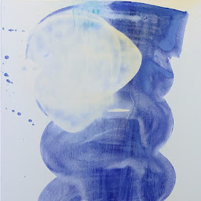

Poema 1
¿Seré un Astronauta?
Hoy mis únicos amigos fueron las estrellas, los planetas y el silencio.
Mientras avanzo voy dejando estelas blancas en el espacio, en donde va quedando impresa toda mi Historia.
Las energías masculinas y femeninas confluyen y se apoderan de mi.
Soy un Astronauta sin rostro.
Y si alguien lograra observarme, podría notar todo el recorrido de mi Alma.
Aunque con certeza, aparezcan dudas y miedos, sé muy bien detectar los espejismos que se ocultan en mi desierto. Y no me guiaré por ellos.
No es algo fácil. No lo es.
Nuevamente las estrellas enlazan una única ruta y me sumerjo en su trazo. Solo para ver que hay del otro lado. Que misterio se esconde más allá del océano.
Voy conociendo mis lunas y mis soles. Hago el amor con cada una de ellas. Hago el amor conmigo mismo.
Un amor sin igual, porque aquí se desnudan mis sueños, mis miedos, mis deseos más claros y obscuros.
Me vuelvo mi versión mas vulnerable y me identifico en ella.
Y pienso: ¿Por qué la vulnerabilidad es sinónimo de debilidad? Para mi, lejos están de ser lo mismo.
En la vulnerabilidad de mi Ser, todo se ha derrumbado porque todo es mío.
No existen estructuras. Y si alguna llegase a quedar en pie, de forma sutil se puede sobrevolar.
El fuego que nace de mis entrañas ha hecho polvo todo el círculo que alguna vez no me permitió avanzar.
Y el agua que sacude mis emociones, me ha enseñado a navegar más allá del horizonte conocido.
Entonces, vos.. ¿quién sos?

Poema 2
Se tensan las lágrimas al ver, teñida de azul, a la Luna que ríe de tristeza y felicidad.
¿Cómo no voy a volar hoy, si las nubes están descansando en lo invisible?
Trato de llegar a una calle que intenta persuadir al heroísmo de sentir al abismo besándole los pies.
Eso, no significa que las torres se desplomen y que las flechas ya no tengan ganas de atravesar al Tiempo.
Solo, quiero ver azul.
Quiero que las lágrimas se despabilen y se conviertan en algo más.
No necesito de mapas ni girasoles para ver al Sol nacer y ponerse detrás de un espejo que sangra y se empaña cada vez más.
Las ideas que tiemblan como si fuesen un océano turbulento, y van en busca de un suspiro que no las silencie, sino que las confunda con plumas que viajan a merced del viento.
Es cierto que los nudos a veces tardan un poco en encontrar un hueco en donde sea fácil respirar y soñar.
La buena noticia es, que el sueño no le ha perdido pisada a la Esperanza y podría dibujar a ciegas cada cabello que se suelta, libre, del aire.
Si se fijan, ni siquiera los atajos eligen hacer trampa y se olvidan de su esencia por un rato para sentir las palabras caminando en sus labios.
Estoy seguro que ni la noche ha podido predecir que el control se iría a dormir tan temprano y no podrá ver lo hermoso que es el cielo azul.
Las piezas de un rompecabezas implosionan sin tener idea en que sitio caerán, y hacen reír al destino que hoy, decidió no trabajar.
Hasta mis manos se han soltado de mi cuerpo para navegar símbolos que alguna vez habré visto hace tiempo, y no lo recordaba.
Ya las lágrimas flotan alrededor de la tierra y se deslizan hasta su muerte impregnando de deseos y amores a mis ojos, que hoy, ven todo azul.
Pensando, los pensamientos afeitan sus dudas, quiebran los ruidos y se quitan los zapatos para caminar en Silencio.
Y así, lo pronto conquistará mis orillas y las páginas abrazarán a un corazón que tiene en vistas volar cada vez más alto.

Poema 3
Hay rayos que sobreviven al umbral que proyecta tu amor.
En todo caso, las vertientes podrían despilfarrar el hidrógeno que sepulta su existencia y no habría nadie que se anime a reclamar o apuntar con el dedo.
Aunque los grises puedan sacar pecho y defender sus tonalidades abstractas, no les interesa quitarle protagonismo a un cielo que pronto dejará de estar nublado.